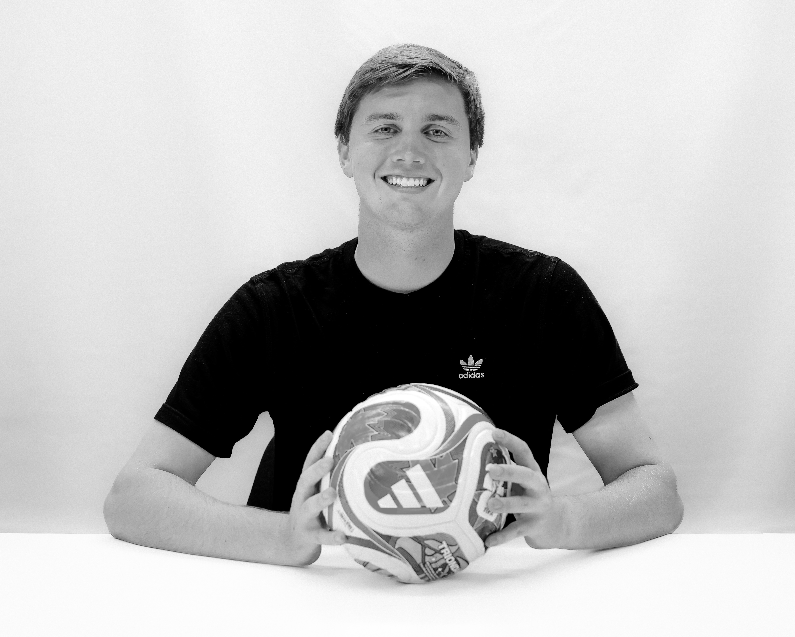

Adidas · Internship
Internship Recap
Brief deck of my work with Adidas North America as a Partnership Activation intern in the summer of 2026, accumulating a social media audience of 1.6+ billion.
View PDF →Lincoln, NE · Omaha, NE · Portland, OR

Triple major at the University of Nebraska–Lincoln in sports media & communications, broadcast journalism, and advertising & PR, with a minor in business administration.
I'm Chase Ruch, a senior at the University of Nebraska-Lincoln and former adidas Partnership Activation Intern working where athletes, brands, and fans meet.
This summer I was a Partnership Activation Intern at adidas during the FIFA World Cup 2026. I tracked athlete and creator content across 116 in-feed posts and 383 stories reaching 1.6B+ potential followers, coordinated partner briefs and seeding calendars for the six-partner MLB “Somos Collection” launch, and built a two-tier NIL athlete-marketing framework that informed partner selection. On the ground, I ran athlete and partner flow at our Brooklyn Bridge Park activation. I also won adidas' 2026 Intern Business Case Competition.
Before adidas, I learned the sports world from the production truck. I've produced live broadcasts for ESPN+ and Big Ten Plus with HuskerVision, including Volleyball Day, the most-attended women's sporting event in history, and I call NCAA soccer and basketball as an on-air commentator for Big Ten Plus.
Adidas · Portland, OR — with on-site activation support in New York, NY
University of Nebraska–Lincoln Athletic Department · Lincoln, NE
Big Ten Plus · Lincoln, NE
Adidas · Internship
Brief deck of my work with Adidas North America as a Partnership Activation intern in the summer of 2026, accumulating a social media audience of 1.6+ billion.
View PDF →Adidas · Running
Competition-winning presentation given to Adidas Running business unit.
View PDF →FOX Sports · Presentation
FOX FIFA World Cup 2026 plans books presented in Sports Media and Communications capstone course.
View PDF →05 — Contact